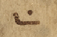

Vat. gr. 754 - Transcription
transcribed by
FWF Project 32988
Available under the Creative Commons ShareAlike 4.0 International License
2020-10-14
The facsimiles of the manuscript are available: Vat. gr. 754
The pinakes identifier of the manuscript is:
The content of the manuscript is:
Physical description of the manuscript:
Form:
Material:
Extent: x
Decoration:
The following glyphs are marked in the transcription:
 LINKING SIGN 1
LINKING SIGN 1
LINKING SIGN 2
 LINKING SIGN 3
LINKING SIGN 3
 LINKING SIGN 4
LINKING SIGN 4
 LINKING SIGN 5
LINKING SIGN 5
 LINKING SIGN 6
LINKING SIGN 6
LINKING SIGN 7
 LINKING SIGN 8
LINKING SIGN 8
 LINKING SIGN 9
LINKING SIGN 9
 LINKING SIGN 10
LINKING SIGN 10
LINKING SIGN 11
(37r)
[middle column] [header]
(1) [left margin of middle column] Α [middle column] ΨΑΛΤήΡΙΟΝ ⁘ |LINKING SIGN 1|
(2) ἈΛΛΗΛΟύΙΑ ⁘ |LINKING SIGN 2|
[middle column] [bibletext]
(1) [left margin of left column] |LINKING SIGN 1| [left column] [glossai] [= fons ignotus (ed. Dorival IV 366) - quotation-abbreviated]
(4) [left margin of left column] |LINKING SIGN 2| [left column] [glossai] [= fons ignotus; cf. fr. 3 Dorival (IV 367) - quotation]
(8) [left margin of left column] |LINKING SIGN 4| [left column] [hexaplaric variant] Α [Aquila] οἱ ο [Septuaginta]
(9) ὁμοίως·
(10) [left column] [hexaplaric variant] Ἄμεμπτος
(11) ὁ ἄνος (ἄνθρωπος) ὃς
(12) οὐ περιεπά
(13) τησεν ἐν συ
(14) νεδρίω (νεδρίῳ)
(15) παρανόμων·
(16) [left column] [hexaplaric variant] Ε [Quinta] S [Sexta]
(17) Τέλειος ὁ νεώτε
(18) ρος ὃς οὐκ ἀπῆλ
(19) θεν ἐν βουλῆ (βουλῇ)
(20) ἀλλοτρίων·
(21) [left margin of left column] |LINKING SIGN 7| [left column] [hexaplaric variant] Α [Aquila]
(22) κ(αὶ) ἐν καθέδρα (καθέδρᾳ)
(23) χλευαστ(ῶν), οὔ·
(24) [left column] [hexaplaric variant] Ϲ [Symmachus]
(25) κ(αὶ) ἐν καθέδρα (καθέδρᾳ)
(26) ἐπιθετῶν, οὐ
(27) κεκοινώνησεν·
(28) [left column] [hexaplaric variant] Ε [Quinta] S [Sexta]
(29) κ(αὶ) ἐπὶ καθέδρα (καθέδρᾳ)
(30) παρανόμων,
(31) οὐχευρέθη (οὐχ εὑρέθη)·
(1) [right column] [glossai] |LINKING SIGN 3| [= Basilius, hom. in Ps 1 (PG 29, 216 B5–7 in Ps 1,1a) - quotation]
(6) [left margin of right column] |LINKING SIGN 3| [right column] [glossai] [= fons ignotus in Ps 1,1a; Suda, s.v. Μακάριος (Μ nr. 55 Adler) et alibi]
(8) [right column] [glossai] |LINKING SIGN 5| [= fons ignotus in Ps 1,1a (in ἀσεβῶν; Analecta Sacra II 445, 23) - quotation]
(9) [left margin of right column] |LINKING SIGN 6| [right column] [glossai] [= fons ignotus in Ps 1,1c (Analecta Sacra II 445, 24–25) - quotation]
(12) [left margin of right column] |LINKING SIGN 6| [right column] [glossai] [= fons ignotus in Ps 1,1c (in λοιμῶν)]
(13) [left margin of right column] |LINKING SIGN 6| [right column] [glossai] [= fons ignotus in Ps 1,1c (in οὐκ ἐκάθισεν)]
(14) [left margin of right column] |LINKING SIGN 9| [right column] [hexaplaric variant] Α [Aquila] Ϲ [Symmachus] Ε [Quinta] S [Sexta]
(15) ἐν νόμω (νόμῳ) κυ (κυρίου)· φθέγξε
(16) ται ἡμέρευσιν κ(αὶ) νύκτα·
(17) [left margin of right column] |LINKING SIGN 10| [right column] [hexaplaric variant] Α [Aquila]
(18) βουλεύματα αὐτοῦ·
(19) [right column] [hexaplaric variant] Α [Aquila] λαλήσει· Α [Aquila] Ϲ [Symmachus] φθέγξεται·
(20) Α [Aquila] ἐπιδιεξόδους (ἐπὶ διεξόδους)·
(21) [left margin of right column] Ϲ [Symmachus] [right column] [hexaplaric variant] εἰς τὰς διεξόδους·
(1) [bottom of middle column] [hexaplaric variant] [Α] [Aquila] |LINKING SIGN 11| κ(αὶ) ἔσται ὡς τὸ ξύλον μεταπεφυτευμένον·
[Ps (LXX) 1,1a]
(3) Μακάριος |LINKING SIGN 3| |LINKING SIGN 4| ἀνὴρ ὃς
(4) οὐκ ἐπορεύθη ἐν βου
(5) λῆ (λῇ) ἀσεβῶν: |LINKING SIGN 5| –
[Ps (LXX) 1,1b]
(6) καὶ ἐν ὁδῶ (ὁδῷ) ἁμαρτωλῶν
(7) οὐκ ἔστη: –
[Ps (LXX) 1,1c]
(8) |LINKING SIGN 6| καὶ ἐπὶ καθέδραν |LINKING SIGN 7| λοιμῶν,
(9) οὐκεκάθισεν (οὐκ ἐκάθισεν): –
[Ps (LXX) 1,2a]
(10) [left margin of middle column] Β [middle column] αλλ᾿ 〈ἀλλ᾿〉 ἢ ἐν τω νόμω (τῷ νόμῳ) κυ (κυρίου) τὸ θέ
(11) λημα αὐτοῦ: –
[Ps (LXX) 1,2b]
(12) [left margin of middle column] Γ [middle column] καὶ |LINKING SIGN 8| ἐν τω νόμω (τῷ νόμῳ) |LINKING SIGN 9| αὐτοῦ με
(13) λετήσει |LINKING SIGN 10| ἡμέρας καὶ νυκτός:
[Ps (LXX) 1,3a]
(14) [left margin of middle column] Δ [middle column] καὶ ἔσται |LINKING SIGN 11| ὡς τὸ ξύλον τὸ
(15) πεφυτευμένον παρὰ τὰς
[top of the page] [commentary]
(1) Ψαλτήριόν ἐστιν ὄργανον μουσικὸν ἐναρμονίους τοὺς φθόγγους πρὸς τὴν
(2) ἐκ τῆς φωνῆς μελωδίαν (μελῳδίαν) ἀποδίδον: – [= Basilius, hom. in Ps 48 (PG 29, 436 C3–5) - quotation]
[top of the page] [hypothesis]
[main text] [hypothesis]
(3) [left margin] Α [top of the page] [= Athanasius, schol. in Ps 1 - quotation][bottom of the page] [commentary]
(1) [left margin] B [bottom of the page] [= Athanasius, schol. in Ps 1,2a - quotation]
(2) [left margin] Γ [bottom of the page] [= Athanasius, schol. in Ps 1,2b - quotation]
(4) [left margin] Δ [bottom of the page] [= Athanasius, schol. in Ps 1,3a - quotation]
(10) [left margin] |LINKING SIGN 8| [bottom of the page] [= Theodoretus, comm. in Ps 1,2 - quotation] [right margin] θείῳ νό
(11) [= Theodoretus, comm. in Ps 1,2 - quotation (continued)]